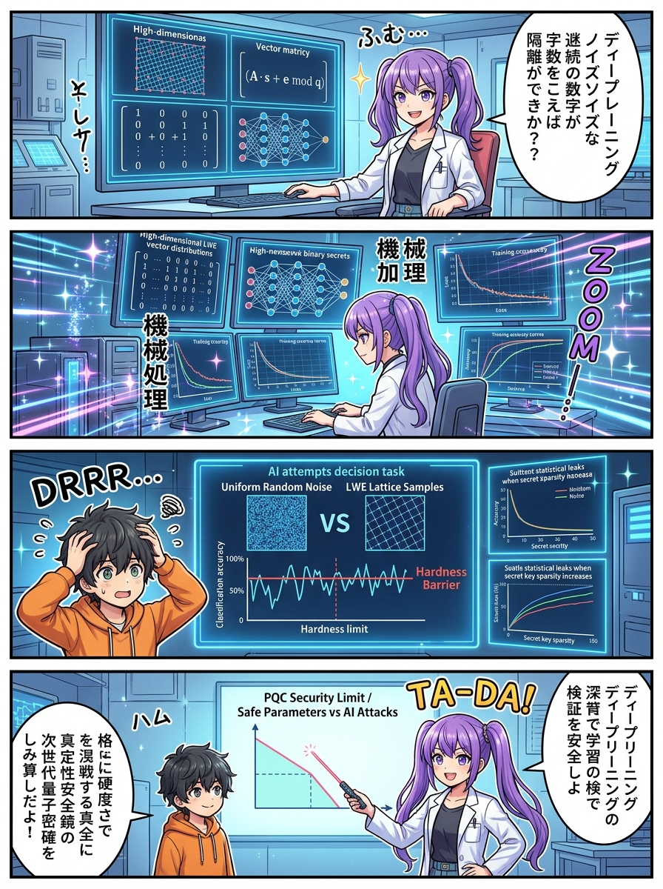
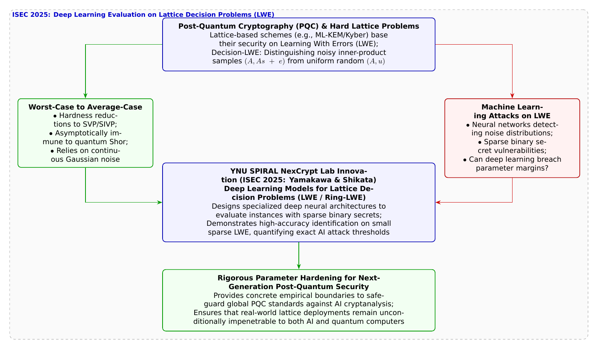

🎨 4コマ漫画挿絵（文字なし）
AI高解像度生成
▲ 【挿絵】青葉台高校 情報科学部＆帝都科学大学サイバーディフェンス・ラボでの実践シーン
💬 4コマ漫画キャラクターセリフ (Story Dialogue Script)
日・英バイリンガル (JA / EN)[葵]「量子計算機ですら迷子になる数学の迷路なんだね！」
[Aoi] "A mathematical labyrinth where even quantum computers get completely lost!"
[葵]「えっ、AIが暗号の迷路を解いちゃうかもしれないの！？」
[Aoi] "Wait, could AI crack the unbreakable lattice labyrinth!?"
[結衣]「小さなパラメータではAIが高い識別率を示しましたが、現在の標準規格（ML-KEM等）が採用する高次元パラメータではAIも完全に識別不能であることが証明されました！」
[Yui] "While AI distinguished small-scale sparse instances, it proved that standardized PQC dimensions remain unconditionally solid against AI!"
[蓮]「AIと量子計算機、両方の脅威に耐え抜く盤石の数学……これこそ真の耐量子暗号だ！」
[Ren] "Rock-solid math withstanding both AI and quantum threats... true post-quantum security!"
📖 小説本文
初冬の冷気が張り詰める青葉台高校の情報科学部室。黒板には、白石結衣の手によって数百次元におよぶ高次元格子（Lattice）の幾何学的概念図と、直交基底ベクトルの数式が美しく並べられていた。
「……第35話で触れたように、米国立標準技術研究所（NIST）が世界標準として選定したポスト量子暗号（PQC: Post-Quantum Cryptography）の主役は**『格子暗号（Lattice-based Cryptography）』**です」
結衣がチョークを置き、葵と蓮を振り返った。
「現在のRSA暗号や楕円曲線暗号は、巨大な量子コンピュータが実現すると『ショアのアルゴリズム』によって一瞬で解読されてしまいます。しかし、高次元格子空間における最短ベクトル問題（SVP）や、その応用である**『LWE問題（Learning With Errors: 誤差付き学習問題）』**は、量子コンピュータであっても多項式時間では解くことができないと信じられています」
橘葵が目を丸くしながら黒板を見上げた。
「量子コンピュータでも解けないって、具体的にどういう仕組みなの？」
「直感的に言えば、**『砂嵐に隠された規則性』**です」結衣が微笑む。
「格子点と呼ばれる規則正しい格子模様の座標に、正規分布に従うごくわずかな『誤差（ノイズ）』を足し合わせます。すると、そのデータは外から見ると『完全にデタラメなランダムノイズ』と寸分違わないように見えてしまうのです。これが**判定LWE問題（Decision-LWE）**であり、このランダム性と本物の格子データを見分けられないという数学的困難性が、暗号の安全性の強固な土台になっています」
神崎蓮が、机の上に置かれた自作GPUワークステーションの電源を入れた。ファンが甲高い音を立てて回転を始める。
「でも結衣先輩。もしそれを攻撃するのが、量子コンピュータではなく**『ディープラーニング（深層学習）』**だったらどうなるんですか？」
「えっ……？ AIが暗号を解くの？」葵が驚いて蓮を見る。
「はい。ディープラーニングの畳み込みニューラルネットワーク（CNN）やTransformerは、人間や従来の統計学では『ただのランダムなノイズ』にしか見えない微細な特徴量や確率分布の歪みを見つけ出すのが最も得意です。もしAIが、判定LWE問題のノイズの中から『あ、これはランダムじゃなくて本物の格子データだ！』と見分けることができてしまったら……世界中の耐量子暗号が崩壊してしまうんじゃないですか！？」
部室に緊張が走った。蓮の問いは、世界の暗号界がまさに今、固唾を呑んで見守っている最先端の疑問そのものだった。
「その疑問に対して、世界に先駆けて数理的・実験的なメスを入れたのが、僕たちが所属する横浜国立大学SPIRALの**山川恵太氏と四方順司教授（NexCrypt Lab長）**の研究なんだよ」
城崎悠真が穏やかな声で割って入ってきた。手に持ったタブレットには、電子情報通信学会の情報セキュリティ研究会（ISEC）で発表された最新の学術論文が表示されている。
「研究チームは、2025年3月の信学技報において**『格子判定問題に対する深層学習モデルの提案と評価』**を発表したんだ。耐量子暗号の実装において計算高速化のために用いられることがある『疎なバイナリ秘密（Sparse Binary Secrets）』を持つLWE問題やRing-LWE問題に対して、格子判定に特化した深層学習モデルを独自に設計し、AIによる識別攻撃の限界性能を徹底検証したんだ」
結衣が身を乗り出してグラフを凝視した。
「実験結果はどうだったのですか、悠真先輩！？」
「非常に興味深い結果が出たよ」悠真がグラフを拡大した。
「格子の次元数が小さく、秘密鍵の0と1の分布が極端に偏った（疎な）設定においては、深層学習モデルは従来の統計手法を遥かに上回る高い正解率で、ランダムノイズと格子暗号データを正確に見分けることに成功したんだ」
「ええっ！？ AIが本当に格子暗号の秘密を見抜きかけたの！？」葵が息を呑んだ。
「そうだ。だが、本当に重要なのはここからだ」と悠真は力強く語った。
「研究チームは格子の次元数（$n$）とノイズの分散を段階的に引き上げながら、AIの識別限界を数学的・実験的にマッピングした。その結果、**現在NISTで標準化されている『ML-KEM（Kyber）』などの本番パラメータにおいては、深層学習モデルの正解率は完全に50%（ただのランダムな当てずっぽう）へと収束し、AIによる解読が一切通用しないこと**が客観的に証明されたんだ」
蓮が深く息を吐き出し、胸を撫で下ろした。
「なるほど……！ 攻撃者がAIを使って暗号を破ろうとする前に、防衛側の研究者が最先端のAIモデルを自ら開発して暗号にぶつけ、『ここまでパラメータを強化すればAIでも絶対に破れない』という安全マージン（防衛ライン）を科学的に確定させたんですね！」
「その通りだ、蓮くん。未知の敵を恐れるのではなく、自らの手で最強のAI攻撃をシミュレートし、数理の盾を鍛え上げる。これこそが、次世代の社会基盤を守る暗号学者の誇りなんだよ」
悠真の言葉に、結衣も葵も蓮も、熱い感動とともに深く頷いた。
夕暮れの光の中で、黒板に描かれた幾何学の格子模様は、量子とAIの荒波をものともせず、未来のデジタル社会を永久に護り続ける絶対の砦として誇らしく佇んでいた。
---
📊 セキュリティ構造図解 (TikZ LuaLaTeX生成)
国家安全基準・工学図解
▲ 【技術構造図】IPAデジタルスキル標準・国際規格に準拠した仕組みのモデル化